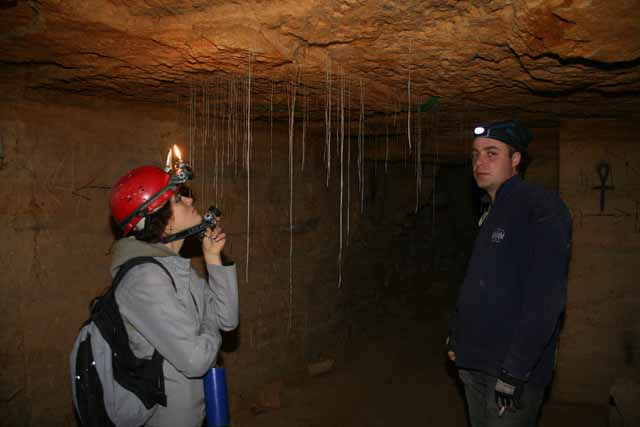
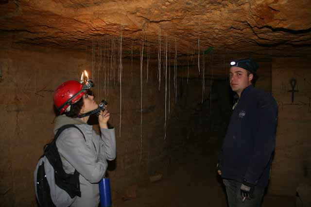

Оде́ські катако́мби — мережа підземних ходів і лабіринтів під Одесою. Більша частина катакомб були каменоломнями, з яких видобували будівельне каміння. Загальну довжину Одеських катакомб оцінюють приблизно у 2,5 тис. км[1]. Наприкінці XX століття катакомби стали причиною різкого ускладнення інженерно-геологічних умов. Понад 40% старої частини міста збудовано на підробленій території, де відбулося понад 100 провалів.
Переважно на 95—97% одеські катакомби є підземними каменоломнями, в яких видобували будівельне каміння — вапняк, що використовували для спорудження міста. Окрім того, в систему катакомб входять порожнини природного походження — карстові печери, геологорозвідувальні та будівельні шурфи, підвали, бункери, дренажні тунелі, зливові колектори та інші підземні порожнини.
 
